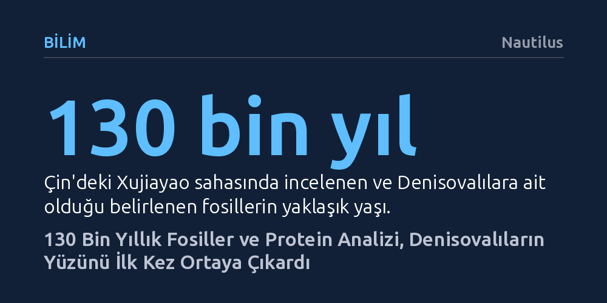

BILIM · Nautilus · 2026-10-23
Çin'deki 130 bin yıllık fosiller üzerinde yapılan protein dizilemesi ve morfolojik incelemeler, Denisova insanının kafatası ve yüz yapısını ilk kez netleştirdi. Bulgular, bu kadim insanların basık alınlı, belirgin kaş kemerli ve düz elmacık kemikli özgün bir yüze sahip olduğunu gösteriyor.
Yıllardır sadece genetik izleriyle tanıdığımız en gizemli insansı akrabamız Denisovalıların nihayet somut bir yüze ve fiziksel kimliğe kavuşmasını sağlıyor.

İnsan evrimi ağacının en esrarengiz dallarından birini Denisova insanları oluşturuyor. Bu kadim insansı türe ait ilk fosiller neredeyse yarım yüzyıl önce gün ışığına çıkarılmış olsa da, onların Neandertallerden ve modern insandan genetik olarak tümüyle farklı, bağımsız bir soy hattı olduğu ancak son 15 yılda kanıtlanabildi. Adını ilk örneklerin tespit edildiği Rusya'daki Denisova Mağarası'ndan alan bu topluluk, uzun süre boyunca fiziksel olarak nasıl göründüğü bilinemeyen soyut bir genetik iz olarak kaldı.
Nature dergisinde yayımlanan kapsamlı yeni bir araştırma, bu köklü belirsizliğe nihayet son vererek Denisovalıların anatomik çehresini somutlaştırıyor. Çin ve uluslararası araştırma ekiplerinin yürüttüğü çalışma, yalnızca genetik dizilimlere dayanan varsayımları aşarak bu insanların kafatası ve yüz morfolojisini ilk defa bilimsel olarak ete kemiğe büründürüyor.
Çin Bilimler Akademisi bünyesindeki paleoantropolog ve genetikçilerden oluşan ekip, Çin'in Xujiayao bölgesinde yer alan yaklaşık 130 bin yıllık zengin bir fosil yatağını incelemeye aldı. Taş aletler ve çeşitli hayvan kalıntılarıyla bir arada bulunan 20 parçalık bu insan kemiği koleksiyonu, 1970'li yıllarda ilk kez kazıldığında hangi türe ait olduğu anlaşılamamış ve bilim dünyasında uzun süren tartışmalara yol açmıştı.
Araştırmacılar, aradan geçen on yılların ardından kemiklerdeki kolajen peptitlerini modern proteomik dizileme teknikleriyle yeniden analiz etti. Bu ileri moleküler inceleme sonucunda, ne modern insanlarda ne de Neandertallerde görülen, yalnızca Denisovalılara özgü kilit bir aminoasit değişimi tespit edildi. Böylece fosillerin tartışmasız bir biçimde Denisova soyuna ait olduğu moleküler düzeyde kanıtlandı.
Ekip kimlik tespitinin ardından, Xujiayao'daki kafatası ve çene parçaları ile neredeyse eksiksiz bir Denisova kafatası olan meşhur Harbin kranyumu üzerinde ayrıntılı morfolojik ölçümler yaptı. Elde edilen bulgular, Denisovalıların farklı hominin türlerinin ayırt edici özelliklerini bünyesinde toplayan zengin bir anatomik mozaik sergilediğini ortaya koydu. Kalın ve geniş kafatası çatısı doğrudan Homo erectus'u hatırlatırken, iç kulağı barındıran boşluk Neandertalleri, kubbeli kafatasının yüksek yan duvarları ise modern insanı andırıyordu.
Ancak bu benzerliklerin ötesinde, kafatasının genel silüeti Denisovalılara has özgün bir hat çiziyordu. Analiz sonuçlarına göre Denisova insanı; görece uzun ve basık bir kafatasına, geriye doğru eğimli alçak bir alına, oldukça belirgin ve kalın kaş kemerlerine ve düz elmacık kemiklerine sahipti. Bu veriler, tarih öncesi akrabalarımızın bilinen diğer insan türlerinden ayrılan belirgin bir yüz karakterine sahip olduğunu gösteriyor.
Fosil kayıtlarında görülen bu anatomik geçişler, erken homininlerin sanılandan çok daha dinamik bir etkileşim içinde olduğunu gösteren önceki araştırmalarla tam bir uyum sergiliyor. Denisovalıların Avrasya genelinde Homo erectus, Neandertal ve modern insanın atalarıyla çiftleştiği ve gen alışverişinde bulunduğu biliniyor. Bu yoğun genetik temas, kafatası özelliklerinin neden farklı türlerden izler taşıdığını doğal bir biçimde açıklıyor.
Araştırmacılar, bu esrarengiz tür hakkındaki bilgilerimizin henüz yeni olduğuna dikkat çekiyor. Yeni fosil keşifleri yapıldıkça ve antik protein ile DNA analiz teknikleri geliştikçe Denisovalıların yüz rekonstrüksiyonu daha da ince ayrıntılar kazanabilir; ancak eldeki veriler, derin geçmişimize açılan bugüne kadarki en net pencereyi sunuyor.